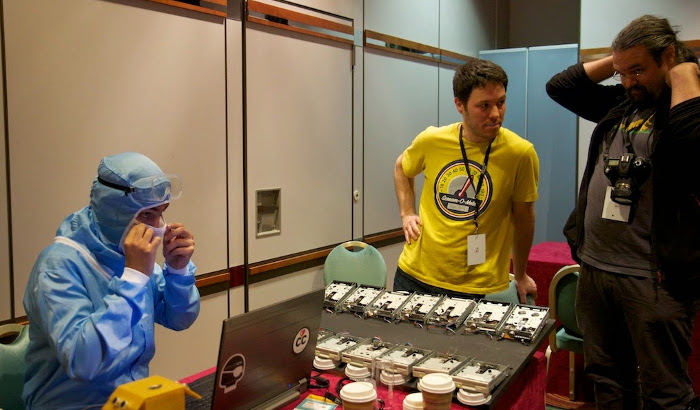
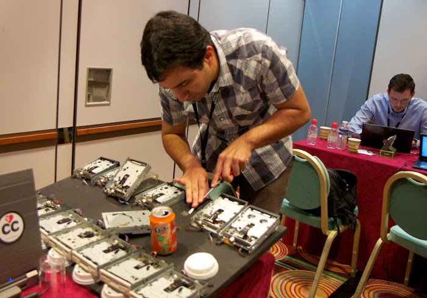
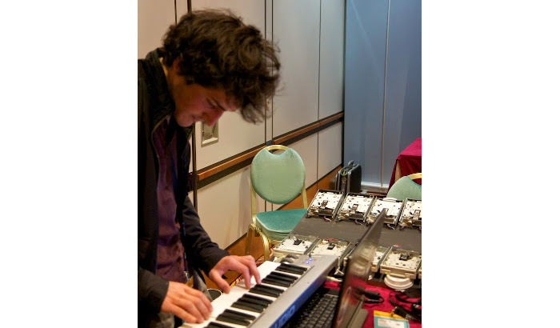
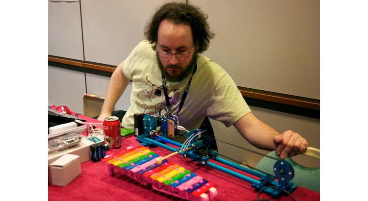
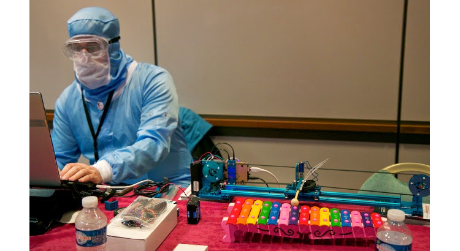
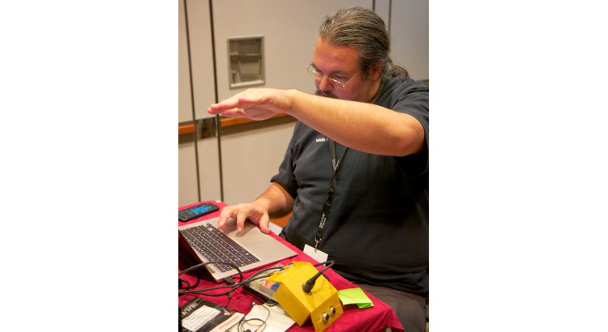

Un instrument de musique fait à base de 14 lecteurs de disquette fournis par les membres du LAB
Beaucoup de câbles, une planche mal peinte
Prend en entrée des fichiers midi ou un instrument midi quelconque
Le pianoctet

Le pianoctet

Le pianoctet

La kinharpe
Une harpe laser midi pour se la raconter comme Jean-Michel Jarre.
La première version à un seul laser était non présentable pour cause d’une source laser insuffisante.
La deuxième version utilise 7 lasers de faible puissance (5mW), une kinect et un script OpenCV pour détecter les notes.
Pour l’instant c’est plus une PoC qu’un vrai instrument mais ça a permis de faire le show.
Le Xylorobot
Un robot capable de jouer sur un Xylophone
Fait à partir d’un kit Makeblock et d’un arduino
Actuellement fonctionne que sous Windows mais il est en cours de recodage pour
être multiplateforme et prendre du midi en entrée.
Le Xylorobot

Le Xylorobot

L’ultramine
Un Thérémine Midi réalisé à base d’une carte ST Nucléo et de deux capteurs de distance à Ultrason.
Entièrement codé par Antoine pendant le hackathon.
Le boitier devra être repensé car il est pas évident de lever les mains avec l’angle actuel.
L’ultramine

Bilan du Hackathon des bidouilleurs
4 instruments étranges présentés et 1 en cours de montage
Un projet réalisé en commun avec les différents bidouilleurs du LAB
Beaucoup de moments de stress
Beaucoup trop de désordre dans le LAB
3 semaines avec une utilisation inhabituelle du LAB
8h de voiture avec des gens aussi fous que moi
2j énormes de partage, de rire, de démonstrations musicalement hasardeuses et de code surtout pas en Java
Bilan du Hackathon des bidouilleurs
Un énorme remerciement à tous ceux qui on apporté leur contribution à la concrétisation de ce projet.
Et une spéciale dédicace à Jonathan qui a passé énormément de temps au LAB pour ce projet alors qu’il
ne pouvait pas faire le déplacement pour cause de début de stage.